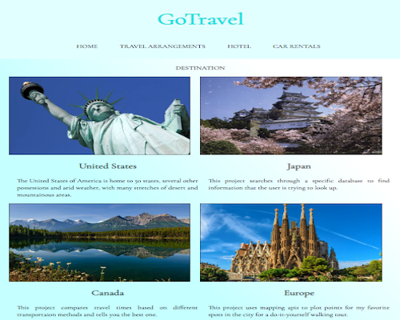
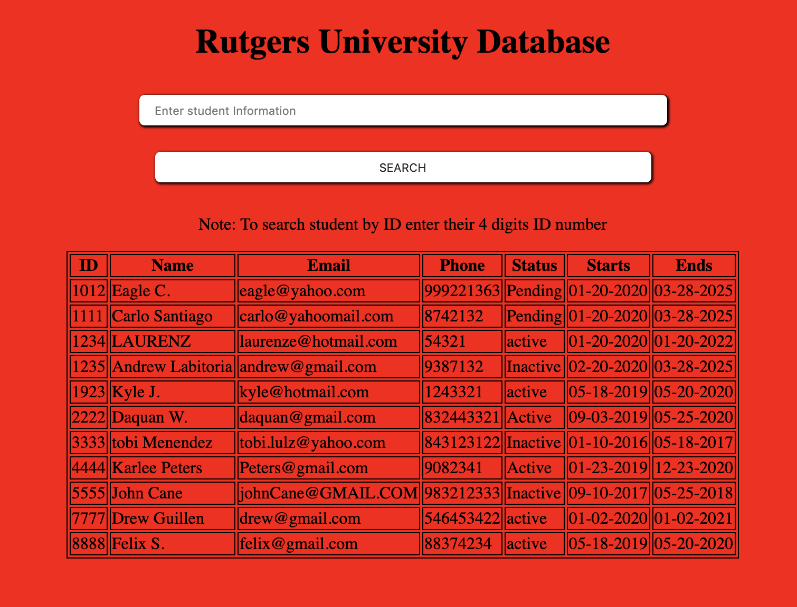
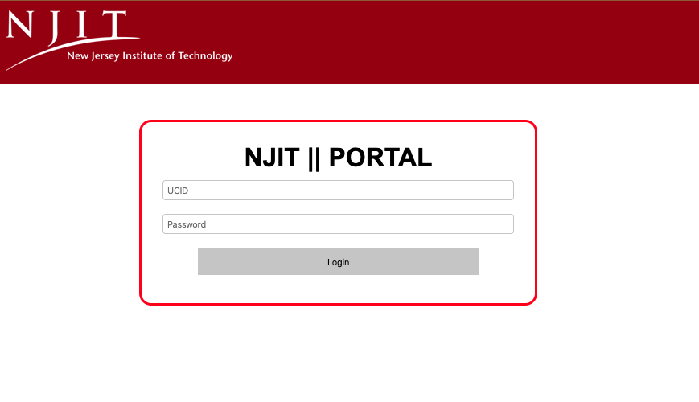

Rutgers Capstone & Hackathon Projects
-

HackRU2018 Web Responsive Layout (Still in Progress) In this project, my team and I build a static destination website. They created the blueprint, used photoshop software, and I did the implementation. For this project, it took us at least 18 hours to make this program functional. This is not a finished product and there are still more improvements that need to be done for this project. See project (MLH) HackRU 2018 project
-

Scheduling Algorithms Simulation In my Operating System Course we have to write a program that will stimulate First Come First Serve(FCFC), Shortest Job First(SJF), shortest remaining time next(SRTnext), and Round Robin(with quantum = 4 milliseconds) scheduling algorithms.
-

During my 2019 summer course, we learned how LAMP works and build a mini project using HTML, CSS, JavaScript, mySQL, and PHP. I created a school database in which a user can insert,delete,search, and update data.
-

Design in Software Engineering. This Project is a Website that allows a professor to create a test that is based on Python, similar to NJIT CS100. However, the test is automatically graded by our Patented CS1000 Algorithm, to save the professor time and hassle. Once the exams have been automatically graded, he can still add comments and change the grades if he feels the grader made a mistake.(Tap for Live DEMO)